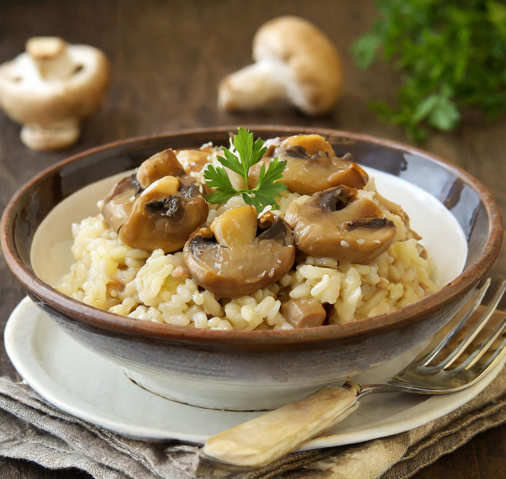

Receita de Risoto de Cogumelo
Este risoto de cogumelo é uma opção deliciosa para um jantar especial ou para surpreender seus convidados. O arroz cremoso, os cogumelos frescos e o parmesão derretido se combinam perfeitamente para criar um prato irresistível que vai deixar todos com água na boca!
Ingredientes:
- 300g de arroz arbóreo
- 200g de cogumelos variados (shiitake, shimeji, champignon), fatiados
- 1 cebola média, picada
- 2 dentes de alho, picados
- 1 litro de caldo de legumes
- 1/2 xícara de vinho branco seco
- 50g de manteiga sem sal
- 50g de queijo parmesão ralado
- 2 colheres de sopa de azeite de oliva
- Sal e pimenta a gosto
- Salsinha fresca picada para decorar
Modo de Preparo:
- Em uma panela, aqueça o caldo de legumes e mantenha-o em fogo baixo.
- Em outra panela, aqueça o azeite de oliva e refogue a cebola e o alho até ficarem macios.
- Adicione os cogumelos fatiados à panela e refogue até que estejam macios e dourados.
- Adicione o arroz à panela dos cogumelos e refogue por alguns minutos.
- Despeje o vinho branco na panela e mexa até que o líquido seja absorvido pelo arroz.
- Aos poucos, adicione conchas do caldo de legumes quente ao arroz, mexendo sempre e esperando que o líquido seja absorvido antes de adicionar mais.
- Continue adicionando o caldo de legumes e mexendo até que o arroz esteja cozido, mas ainda al dente.
- Retire a panela do fogo e adicione a manteiga e o queijo parmesão ralado, mexendo bem até que fiquem incorporados e o risoto fique cremoso.
- Tempere com sal e pimenta a gosto.
- Divida o risoto em pratos, polvilhe com salsinha fresca picada e sirva imediatamente. Aproveite!